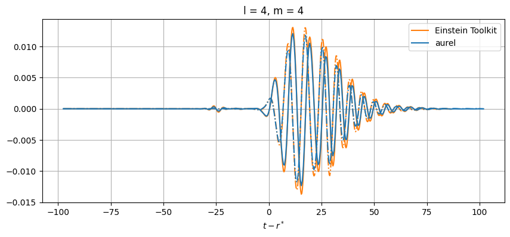
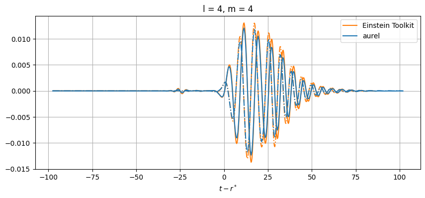

Gravitational Waves
import os
import pickle
import matplotlib.pyplot as plt
import numpy as np
import pandas as pd
import aurel
For this example, we use a simulation evolved with Einstein Toolkit based on the qc0-mclachlan simulation. This evolves a binary black hole system using the moving puncture technique. The black holes start at a close separation and only complete about one half of an orbit before merging.
os.environ["SIMLOC"] = "/mnt/lustre/users/astro/rlm36/" # So that aurel can find the data
param = aurel.parameters('shortBBH') # This reads the simulation parameter file as a dictionnary
fd = aurel.FiniteDifference(param) # This is the finite difference and grid class
4th order finite difference schemes are defined
Example \(\Psi_4\)
Just to visualize what \(\Psi_4\) looks like, let’s calculate it just for one moment in the simulation
# Load data
data = aurel.read_data(
param,
vars = ['gammadown3', 'Kdown3', 'alpha', 'dtalpha', 'betaup3', 'dtbetaup3'],
it = [51200])
# Calculate Psi_4
data = aurel.over_time(
data, fd,
vars=['Weyl_Psi'],
vacuum = True, # This simplifies the calculations
tetrad = 'quasi-Kinnersley', # Default tetrad, another orthonormal tetrad aligned with the Cartesian coordinates is also available
interp_method='linear')
Psi4r = np.real(data['Weyl_Psi'][0][4])
Psi4i = np.imag(data['Weyl_Psi'][0][4])
Reading iterations in /mnt/lustre/users/astro/rlm36/shortBBH/iterations.txt
Restarts to process: []
Nothing new to process. Consider running with skip_last=False to analyse the last restart (if it is not an active restart).
Loading existing content from /mnt/lustre/users/astro/rlm36/shortBBH/output-0000/shortBBH/content.txt...
Loaded 8 variables from cache.
=========== Restart 0:
vars to get ['gammadown3', 'Kdown3', 'alpha', 'dtalpha', 'betaup3', 'dtbetaup3']:
Data read from split iterations: ['betax', 'gyy', 'betaz', 'kxz', 'gyz', 'kxx', 'alpha', 'betay', 'gxy', 'dtbetax', 'kxy', 'dtalpha', 'dtbetaz', 'gzz', 'kyy', 'gxx', 'gxz', 'kzz', 'kyz', 'dtbetay', 't']
Processing it = 51200
Cosmological constant set to AurelCore.Lambda = 0.00e+00
Tetrad is set to AurelCore.tetrad = quasi-Kinnersley
Calculated gammadown3: $\gamma_{ij}$ Spatial metric with spatial indices down
Calculated gammadet: $\gamma$ Determinant of spatial metric
Calculated gdet: $g$ Determinant of spacetime metric
Calculated gammaup3: $\gamma^{ij}$ Spatial metric with spatial indices up
Calculated Kdown3: $K_{ij}$ Extrinsic curvature with spatial indices down
Calculated s_Gamma_udd3: ${}^{(3)}{\Gamma^{k}}_{ij}$ Christoffel symbols of spatial metric with mixed spatial indices
Calculated s_Ricci_down3: ${}^{(3)}R_{ij}$ Ricci tensor of spatial metric with spatial indices down
Calculated Ktrace: $K = \gamma^{ij}K_{ij}$ Trace of extrinsic curvature
Using vacuum shortcut for eweyl_n_down3
Calculated eweyl_n_down3: $E^{\{n\}}_{ij}$ Electric part of the Weyl tensor on the hypersurface orthogonal to $n^{\mu}$ with spatial indices down
Calculated betaup3: $\beta^{i}$ Shift vector with spatial indices up
Calculated bweyl_n_down3: $B^{\{n\}}_{ij}$ Magnetic part of the Weyl tensor on the hypersurface orthogonal to $n^{\mu}$ with spatial indices down
Calculated betadown3: $\beta_{i}$ Shift vector with spatial indices down
Calculated betamag: $\beta_{i}\beta^{i}$ Magnitude of shift vector
Calculated gtt: $g_{tt}$ Metric with tt indices down.
Calculated gdown4: $g_{\mu\nu}$ Spacetime metric with spacetime indices down
Calculated ndown4: $n_{\mu}$ Timelike vector normal to the spatial metric with spacetime indices down
Calculated gup4: $g^{\mu\nu}$ Spacetime metric with spacetime indices up
Calculated nup4: $n^{\mu}$ Timelike vector normal to the spatial metric with spacetime indices up
Calculated st_Weyl_down4: $C_{\alpha\beta\mu\nu}$ Weyl tensor of spacetime metric with spacetime indices down
CLEAN-UP: Cleaning up cache after 19 calculations...
CLEAN-UP: data size before cleanup: 5245.55 MB
CLEAN-UP: Removing cached value for 'gammadown3' used 5 calculations ago (size: 115.71 MB).
CLEAN-UP: Removing cached value for 'gammaup3' used 9 calculations ago (size: 115.71 MB).
CLEAN-UP: Removing cached value for 'Kdown3' used 9 calculations ago (size: 115.71 MB).
CLEAN-UP: Removing cached value for 's_Ricci_down3' used 12 calculations ago (size: 115.71 MB).
CLEAN-UP: Removing cached value for 'eweyl_n_down3' used 10 calculations ago (size: 115.71 MB).
CLEAN-UP: Removing cached value for 'bweyl_n_down3' used 8 calculations ago (size: 115.71 MB).
CLEAN-UP: Removing cached value for 'gdown4' used 3 calculations ago (size: 205.71 MB).
CLEAN-UP: Removing cached value for 'gup4' used 2 calculations ago (size: 205.71 MB).
CLEAN-UP: Removing cached value for 'betadown3' used 5 calculations ago (size: 38.57 MB).
CLEAN-UP: Removing cached value for 'gammadet' used 9 calculations ago (size: 12.86 MB).
CLEAN-UP: Removed 10 items
CLEAN-UP: data size after cleanup: 4088.45 MB
Calculated Weyl_Psi: $\Psi_0, \; \Psi_1, \; \Psi_2, \; \Psi_3, \; \Psi_4$ List of Weyl scalars for an null vector base defined with AurelCore.tetrad
CLEAN-UP: Cleaning up cache after 20 calculations...
CLEAN-UP: data size before cleanup: 4217.01 MB
CLEAN-UP: Removing cached value for 'Ktrace' used 10 calculations ago (size: 12.86 MB).
CLEAN-UP: Removed 1 items
CLEAN-UP: data size after cleanup: 4075.59 MB
Done!
def plot_format(ax, title, xlabel, ylabel):
"""Format a matplotlib axis with title, labels."""
ax.set_title(title)
ax.set_xlabel(xlabel)
ax.set_ylabel(ylabel)
ix, iy, iz = 80, 80, 80
vmin, vmax = -5e-4, 5e-4
fig, axes = plt.subplots(2, 3, figsize=(15, 7))
im = axes[0,0].imshow(Psi4r[:,:,iz], vmin=vmin, vmax=vmax, extent=[fd.xmin, fd.xmax, fd.ymin, fd.ymax])
plot_format(axes[0,0], r'Re($\Psi_4$)', '', 'y')
axes[0,1].imshow(Psi4r[:,iy,:], vmin=vmin, vmax=vmax, extent=[fd.xmin, fd.xmax, fd.zmin, fd.zmax])
plot_format(axes[0,1], r'Re($\Psi_4$)', '', 'z')
axes[0,2].imshow(Psi4r[ix,:,:], vmin=vmin, vmax=vmax, extent=[fd.ymin, fd.ymax, fd.zmin, fd.zmax])
plot_format(axes[0,2], r'Re($\Psi_4$)', '', 'z')
axes[1,0].imshow(Psi4i[:,:,iz], vmin=vmin, vmax=vmax, extent=[fd.xmin, fd.xmax, fd.ymin, fd.ymax])
plot_format(axes[1,0], r'Im($\Psi_4$)', 'x', 'y')
axes[1,1].imshow(Psi4i[:,iy,:], vmin=vmin, vmax=vmax, extent=[fd.xmin, fd.xmax, fd.zmin, fd.zmax])
plot_format(axes[1,1], r'Im($\Psi_4$)', 'x', 'z')
axes[1,2].imshow(Psi4i[ix,:,:], vmin=vmin, vmax=vmax, extent=[fd.ymin, fd.ymax, fd.zmin, fd.zmax])
plot_format(axes[1,2], r'Im($\Psi_4$)', 'y', 'z')
fig.colorbar(im, ax=axes.ravel().tolist(), extend='both', format='%.0e')
<matplotlib.colorbar.Colorbar at 0x7fbbe365d940>
Get \(\Psi_{4_{l,m}}\)
All you need to do is provide the spacetime quantities to AurelCore and then call for ‘Psi4_lm’. The calculations can be tuned by setting the ‘tetrad’, ‘radius’ (whose input format is a list so multiple radii can be computed), ‘lmax’, and the scipy interpolation method ‘interp_method’.
In practice you will probably want to calculate this at mutiple timesteps of your simulation. Therefore you should load the data of all these iterations and call ‘aurel.over_time’ to calculate ‘Psi4_lm’ for each timestep. This can be time consuming, so here we divide all the iterations into chunks where we gradually save the computed output.
radius = 90
lmax = 4
aurel_filename = param['simpath']+'/'+param['simname']+'/aurel_mp_Psi4.pkl'
allit = list(np.arange(0, 102400, 256))
chunksize = 8
it_in_chunks = [allit[i:i+chunksize] for i in range(0, len(allit), chunksize)]
verbose = True
for ichunk, it in enumerate(it_in_chunks):
# Don't repead iterations already calculated
if os.path.exists(aurel_filename):
with open(aurel_filename, 'rb') as f:
loaded_dict = pickle.load(f)
it = [i for i in it if i not in loaded_dict['it']]
if it != []:
# Load data
data = aurel.read_data(
param,
vars = ['gammadown3', 'Kdown3', 'alpha', 'dtalpha', 'betaup3', 'dtbetaup3'],
it = it,
verbose = verbose
)
# Calculate
data = aurel.over_time(
data, fd,
vars=['Psi4_lm'],
extract_radii=[radius], # It's a list so you can calculate multiple radii
lmax = lmax,
vacuum = True, # This simplifies the calculations
interp_method = 'pchip', # Scipy interpolation method
verbose = verbose
)
# Save data in file
data_to_save = {key:item for key, item in data.items() if key in ['it', 't', 'Psi4_lm']}
if os.path.exists(aurel_filename):
# Load, merge and save
with open(aurel_filename, 'r+b') as f:
loaded_dict = pickle.load(f)
for key in ['it', 't', 'Psi4_lm']:
loaded_dict[key] = np.append(loaded_dict[key], data_to_save[key])
f.seek(0)
pickle.dump(loaded_dict, f)
else:
# Create file and save data
with open(aurel_filename, 'wb') as f:
pickle.dump(data_to_save, f)
verbose = False
print(f'Chunk {ichunk+1} of {len(it_in_chunks)} done', flush=True)
Reading iterations in /mnt/lustre/users/astro/rlm36/shortBBH/iterations.txt
Restarts to process: []
Nothing new to process. Consider running with skip_last=False to analyse the last restart (if it is not an active restart).
Loading existing content from /mnt/lustre/users/astro/rlm36/shortBBH/output-0001/shortBBH/content.txt...
Loaded 8 variables from cache.
=========== Restart 1:
vars to get ['gammadown3', 'Kdown3', 'alpha', 'dtalpha', 'betaup3', 'dtbetaup3']:
Data read from split iterations: ['betax', 'gyy', 'betaz', 'kxz', 'gyz', 'kxx', 'alpha', 'betay', 'gxy', 'dtbetax', 'kxy', 'dtalpha', 'dtbetaz', 'gzz', 'kyy', 'gxx', 'gxz', 'kzz', 'kyz', 'dtbetay', 't']
Processing it = 99584
Cosmological constant set to AurelCore.Lambda = 0.00e+00
Maximum l of spherical decomposition is set to AurelCore.lmax = 4
Extraction radii set to AurelCore.extract_radii = [90]
Center of extraction sphere set to AurelCore.center = (0.0, 0.0, 0.0)
Scipy interpolation method is set to AurelCore.interp_method = pchip
Tetrad is set to AurelCore.tetrad = quasi-Kinnersley
Calculated gammadown3: $\gamma_{ij}$ Spatial metric with spatial indices down
Calculated gammadet: $\gamma$ Determinant of spatial metric
Calculated gdet: $g$ Determinant of spacetime metric
Calculated gammaup3: $\gamma^{ij}$ Spatial metric with spatial indices up
Calculated Kdown3: $K_{ij}$ Extrinsic curvature with spatial indices down
Calculated s_Gamma_udd3: ${}^{(3)}{\Gamma^{k}}_{ij}$ Christoffel symbols of spatial metric with mixed spatial indices
Calculated s_Ricci_down3: ${}^{(3)}R_{ij}$ Ricci tensor of spatial metric with spatial indices down
Calculated Ktrace: $K = \gamma^{ij}K_{ij}$ Trace of extrinsic curvature
Using vacuum shortcut for eweyl_n_down3
Calculated eweyl_n_down3: $E^{\{n\}}_{ij}$ Electric part of the Weyl tensor on the hypersurface orthogonal to $n^{\mu}$ with spatial indices down
Calculated betaup3: $\beta^{i}$ Shift vector with spatial indices up
Calculated bweyl_n_down3: $B^{\{n\}}_{ij}$ Magnetic part of the Weyl tensor on the hypersurface orthogonal to $n^{\mu}$ with spatial indices down
Calculated betadown3: $\beta_{i}$ Shift vector with spatial indices down
Calculated betamag: $\beta_{i}\beta^{i}$ Magnitude of shift vector
Calculated gtt: $g_{tt}$ Metric with tt indices down.
Calculated gdown4: $g_{\mu\nu}$ Spacetime metric with spacetime indices down
Calculated ndown4: $n_{\mu}$ Timelike vector normal to the spatial metric with spacetime indices down
Calculated gup4: $g^{\mu\nu}$ Spacetime metric with spacetime indices up
Calculated nup4: $n^{\mu}$ Timelike vector normal to the spatial metric with spacetime indices up
Calculated st_Weyl_down4: $C_{\alpha\beta\mu\nu}$ Weyl tensor of spacetime metric with spacetime indices down
CLEAN-UP: Cleaning up cache after 19 calculations...
CLEAN-UP: data size before cleanup: 5245.55 MB
CLEAN-UP: Removing cached value for 'gammadown3' used 5 calculations ago (size: 115.71 MB).
CLEAN-UP: Removing cached value for 'gammaup3' used 9 calculations ago (size: 115.71 MB).
CLEAN-UP: Removing cached value for 'Kdown3' used 9 calculations ago (size: 115.71 MB).
CLEAN-UP: Removing cached value for 's_Ricci_down3' used 12 calculations ago (size: 115.71 MB).
CLEAN-UP: Removing cached value for 'eweyl_n_down3' used 10 calculations ago (size: 115.71 MB).
CLEAN-UP: Removing cached value for 'bweyl_n_down3' used 8 calculations ago (size: 115.71 MB).
CLEAN-UP: Removing cached value for 'gdown4' used 3 calculations ago (size: 205.71 MB).
CLEAN-UP: Removing cached value for 'gup4' used 2 calculations ago (size: 205.71 MB).
CLEAN-UP: Removing cached value for 'betadown3' used 5 calculations ago (size: 38.57 MB).
CLEAN-UP: Removing cached value for 'gammadet' used 9 calculations ago (size: 12.86 MB).
CLEAN-UP: Removed 10 items
CLEAN-UP: data size after cleanup: 4088.45 MB
Calculated Weyl_Psi: $\Psi_0, \; \Psi_1, \; \Psi_2, \; \Psi_3, \; \Psi_4$ List of Weyl scalars for an null vector base defined with AurelCore.tetrad
CLEAN-UP: Cleaning up cache after 20 calculations...
CLEAN-UP: data size before cleanup: 4217.01 MB
CLEAN-UP: Removing cached value for 'Ktrace' used 10 calculations ago (size: 12.86 MB).
CLEAN-UP: Removed 1 items
CLEAN-UP: data size after cleanup: 4075.59 MB
Calculated Psi4_lm: $\Psi_4^{l,m}$ List of dictionaries of spin weighted spherical harmonic decomposition of the 4th Weyl scalar. Control with AurelCore.lmax, center, extract_radii, and interp_method.
CLEAN-UP: Cleaning up cache after 21 calculations...
CLEAN-UP: data size before cleanup: 4204.16 MB
CLEAN-UP: Removing cached value for 'st_Weyl_down4' used 2 calculations ago (size: 3291.33 MB).
CLEAN-UP: Removed 1 items
CLEAN-UP: data size after cleanup: 912.83 MB
Now processing remaining time steps sequentially
Done!
Chunk 49 of 50 done
Chunk 50 of 50 done
def time(t, r):
"""Compute the tortoise coordinate time used for GW signals."""
M = 1
return np.array(t) - r - 2*M*np.log(abs((r/(2*M)) - 1))
# Plot every mode
for el in range(2, lmax+1):
for m in range(-el, el+1):
# Skip modes = 0
if (el,abs(m)) not in [(2,1), (3,3), (3,1), (4,3), (4,1)]:
# formal plot
plt.figure(figsize = (10,4))
plt.title(f'l = {el}, m = {m}')
# Einstein Toolkit output
for restart in [0, 1]:
ET_filename = (param['simpath']+'/'+param['simname']+f'/output-{restart:04d}/'
+param['simname']+f'/mp_Psi4_l{el}_m{m}_r{radius}.00.asc')
if os.path.exists(ET_filename):
df = pd.read_csv(ET_filename, sep=r'\s+')
label = 'Einstein Toolkit' if restart == 0 else None
plt.plot(time(df[df.keys()[0]], radius), radius * df[df.keys()[1]], color='C1', label=label)
plt.plot(time(df[df.keys()[0]], radius), radius * df[df.keys()[2]], color='C1', linestyle='-.')
# aurel output
with open(aurel_filename, 'rb') as f:
data = pickle.load(f)
Psi4rlm = np.array([np.real(data['Psi4_lm'][iit][radius][el,m]) for iit in range(len(data['it']))])
Psi4ilm = np.array([np.imag(data['Psi4_lm'][iit][radius][el,m]) for iit in range(len(data['it']))])
plt.plot(time(data['t'], radius), radius * Psi4rlm, color='C0', label='aurel')
plt.plot(time(data['t'], radius), radius * Psi4ilm, color='C0', linestyle='-.')
# format plot
plt.grid()
plt.xlabel(r'$t - r^*$')
plt.legend(bbox_to_anchor=(1,1))
 

While close, there are differences between the results. This can be from a number of numerical sources. In aurel, the wave zone approximation is not taken for the calculation of the Weyl tensor. Additionally different interpolation schemes are being used.